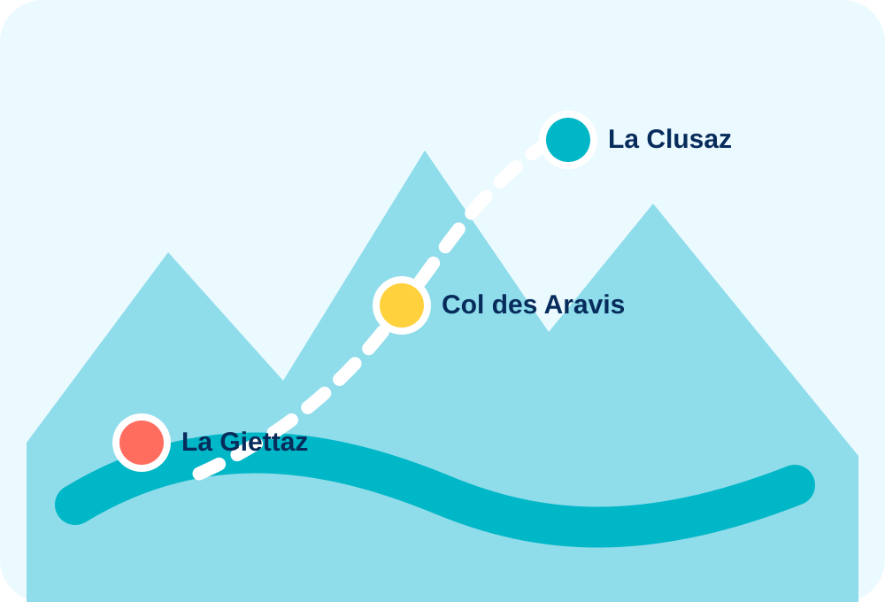

La Giettaz
Village, balade, marché ou départ vers Le Plan.
Entre les versants
Le col comme trait d’union entre La Giettaz et La Clusaz, avec des idées pour composer une journée côté Savoie puis côté Haute-Savoie.

Village, balade, marché ou départ vers Le Plan.
Panorama, restaurant et passage entre les deux départements.
Village, activités, commerces et ambiance de station.
Le site est prêt à accueillir une carte interactive OpenStreetMap lorsque vous aurez défini tous les points à afficher.